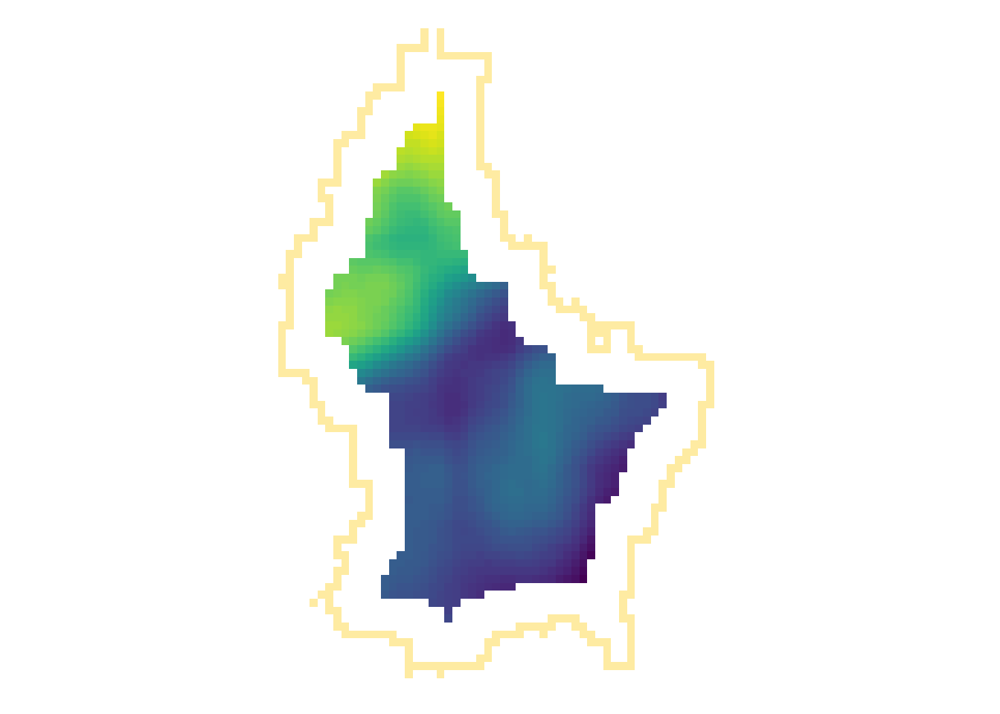

Raster Operations
Introduction
- Map algebra can be defined as operations that modify or summarize raster cell values, with reference to surrounding cells, zones, or statistical functions that apply to every cell.
- Map algebra divides raster operations into four subclasses:
- Local or per-cell operations
- Focal or neighborhood operations. Most often the output cell value is the result of a 3 x 3 input cell block
- Zonal operations are similar to focal operations, but the surrounding pixel grid on which new values are computed can have irregular sizes and shapes
- Global or per-raster operations. That means the output cell derives its value potentially from one or several entire rasters
Global Operation (1)
- The most common global operations are descriptive statistics for the entire raster dataset such as the minimum, maximum or mean value.
- For example: What is the mean elevation value for Luxembourg?
# note: mean(r) does not work, since "mean" is used as a local operator
mean_elev <- global(r, mean, na.rm = TRUE)
mean_elev mean
elevation 347.6488Global Operation (2)
- Another type of “global” operation is
distance - This function calculates the distance from each cell to a specific target cell
- For example, what is the distance from each cell to Luxembourg City, the capital of Luxembourg?

r_dist <- distance(r, luxembourg_city)
r_dist <- mask(r_dist, r)
Zonal
- Zonal operations apply an aggregation function to multiple raster cells
- A second raster with categorical values define the “zones”
What is the mean altitude per municipality?
mean_vals <- zonal(r, zones, fun = mean, na.rm = TRUE)
Note
- The global operation can be seen as a special case of a zonal operation, where the only “Zone” is the entire dataset
Local (1)
- Local operations comprise all cell-by-cell operations in one or several layers.
- For example, we can classify the elevation into values above and below a certain threshold
# first, create a boolean copy of the raster
r_bool <- as.logical(r)
mean_elev <- as.numeric(mean_elev)
mean_elev[1] 347.6488r_bool[r > mean_elev] <- FALSE
r_bool[r <= mean_elev] <- TRUE
Local (2)
- This type of (re-) classification is a very common operation
- For more than 2 categories, we can use
classify
cuts <- global(r, quantile, probs = c(0, .33, .66, 1), na.rm = TRUE)
r_classify <- classify(r, as.numeric(cuts))
# this next line just replaces the default labels with some custom ones
levels(r_classify) <- data.frame(ID = 0:2, category = c("low","mid","high"))
p + tm_shape(r_classify) +
tm_raster(style = "cat",legend.show = TRUE, palette = "viridis", title = "Elevation") +
tm_layout(legend.show = TRUE)
Local (3)
- Local operations are often used with multiple bands
- For example, we could calculate the mean intensity values of red, green and blue:
l7 <- rast(system.file("tif/L7_ETMs.tif",package = "stars"))
names(l7) <- c("B", "G", "R", "NIR", "SWIR", "MIR")
l7_rgb <- l7[[c("R","G", "B")]]
plot(l7_rgb, nr = 1)l7_rgb_mean <- mean(l7_rgb)
plot(l7_rgb_mean)Local (4)
- In a more complex usecase, we could use the R, G and B band to calculate a grayscale value (\(L^*\)) using the following formula (from here):
g <- 2.2
l7 <- l7/255 # scale values to 0-1 (probabbly not necessary)
Y <- 0.2126 * l7[["R"]]^g + 0.7152 * l7[["G"]]^g + 0.0722 * l7[["B"]]^g
L <- 116* Y^(1/3)-16
# Plot the resultFocal
- While local functions operate on one cell focal operations take into account a central (focal) cell and its neighbors.
- The neighborhood (also named kernel, filter or moving window) under consideration is typically of size 3-by-3 cells (that is the central cell and its eight surrounding neighbors), but can take on any other size or shape as defined by the user.
- A focal operation applies an aggregation function to all cells within the specified neighborhood, uses the corresponding output as the new value for the central cell, and moves on to the next central cell

focal3by3 <- matrix(rep(1,9), ncol = 3)
focal11by11 <- matrix(rep(1,121), ncol = 11)
r_foc3 <- focal(r, focal3by3, fun = mean, fillNA = TRUE)
r_foc11 <- focal(r, focal11by11, fun = mean, fillNA = TRUE)

Note
- Note how the output raster is smaller as the focal window is larger (edge effect)
Focal weights (1)
- The focal weights we used above were square and evenly weighted
focal3by3 [,1] [,2] [,3]
[1,] 1 1 1
[2,] 1 1 1
[3,] 1 1 1focal11by11 [,1] [,2] [,3] [,4] [,5] [,6] [,7] [,8] [,9] [,10] [,11]
[1,] 1 1 1 1 1 1 1 1 1 1 1
[2,] 1 1 1 1 1 1 1 1 1 1 1
[3,] 1 1 1 1 1 1 1 1 1 1 1
[4,] 1 1 1 1 1 1 1 1 1 1 1
[5,] 1 1 1 1 1 1 1 1 1 1 1
[6,] 1 1 1 1 1 1 1 1 1 1 1
[7,] 1 1 1 1 1 1 1 1 1 1 1
[8,] 1 1 1 1 1 1 1 1 1 1 1
[9,] 1 1 1 1 1 1 1 1 1 1 1
[10,] 1 1 1 1 1 1 1 1 1 1 1
[11,] 1 1 1 1 1 1 1 1 1 1 1Focal weights (2)
- However, we can also create uneven weights:
For example, a laplacian filter is commonly used for edge detection.
laplacian <- matrix(c(0,1,0,1,-4,1,0,1,0), nrow=3)
laplacian [,1] [,2] [,3]
[1,] 0 1 0
[2,] 1 -4 1
[3,] 0 1 0So are the sobel filters
[,1] [,2] [,3]
[1,] -1 0 1
[2,] -2 0 2
[3,] -1 0 1 [,1] [,2] [,3]
[1,] 1 2 1
[2,] 0 0 0
[3,] -1 -2 -1
Focal weights (3)
- We can also create specific shapes using weights
- We don’t need to create these matrices by hand. Rather, we can use the function
focalMatto create different shapes automatically
# Note
# - "d" is evaluated in the units of "x" (in our case: meters)
# - The sum of all weights equals to 1
# - Note how the edges receive a value of 0
focal_circle3000 <- focalMat(x = r, d = 3000, "circle")
focal_circle3000 [,1] [,2] [,3] [,4] [,5]
[1,] 0.00000000 0.00000000 0.03703704 0.00000000 0.00000000
[2,] 0.03703704 0.03703704 0.03703704 0.03703704 0.03703704
[3,] 0.03703704 0.03703704 0.03703704 0.03703704 0.03703704
[4,] 0.03703704 0.03703704 0.03703704 0.03703704 0.03703704
[5,] 0.03703704 0.03703704 0.03703704 0.03703704 0.03703704
[6,] 0.03703704 0.03703704 0.03703704 0.03703704 0.03703704
[7,] 0.00000000 0.00000000 0.03703704 0.00000000 0.00000000
focal_gauss1000 <- focalMat(x = r, d = 1000, "Gauss")
focal_gauss1000 [,1] [,2] [,3] [,4] [,5]
[1,] 0.000241551 0.001082556 0.001784834 0.001082556 0.000241551
[2,] 0.002942693 0.013188236 0.021743725 0.013188236 0.002942693
[3,] 0.013188236 0.059105572 0.097448614 0.059105572 0.013188236
[4,] 0.021743725 0.097448614 0.160665602 0.097448614 0.021743725
[5,] 0.013188236 0.059105572 0.097448614 0.059105572 0.013188236
[6,] 0.002942693 0.013188236 0.021743725 0.013188236 0.002942693
[7,] 0.000241551 0.001082556 0.001784834 0.001082556 0.000241551
Focal functions in terrain processing
- Focal functions are used to calculate the slope of a specific location, e.g. using the algorithm by Horn (1981)
- Similarly, calculating the aspect (azimuth) of a location is a very typical task when dealing with elevation data
- These algorithms are used so often, that they are implemented in a dedicated function (
terrain())
terrain(r, "slope") |> plot()
terrain(r, "aspect") |> plot()ü™ï Tasks
Import the elevation of Luxembourg using the following code:
r <- rast(system.file("ex/elev.tif", package="terra"))Calculate the mean, maximum and minimum elevation values
Calculate slope and aspect (see terrain functions)
Determine suitable locations of solar panels using the following conditions:
- Elevation: above 300 MASL
- Slope: Between 1 and 3°
- Aspect: Southfacing (between 135 and 235°)
Download the Municipalities of Luxembourg from Moodle and calculate the minimum, maximum and mean elevation values per municipality.
Smooth the elevation values using different focal windows
Import the multispectral Landsat 7 as a raster using the following path
system.file("tif/L7_ETMs.tif",package = "stars")Calculate the NDVI using the following formula:
\[\text{NDVI} = \frac{\text{NIR}-\text{red}}{\text{NIR}+\text{red}}\]
Horn, Berthold KP. 1981. “Hill Shading and the Reflectance Map.” Proceedings of the IEEE 69 (1): 14–47.
Lovelace, Robin, Jakub Nowosad, and Jannes Muenchow. 2019. Geocomputation with r. Chapman; Hall/CRC.